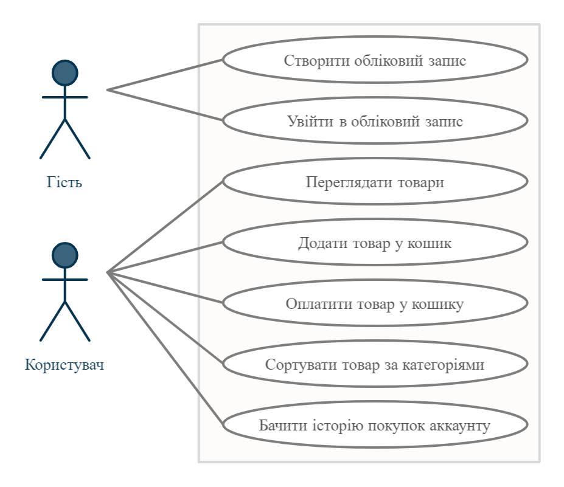

Опис предметної області
Предметна область: Веб-сайт магазину(маркету-плейсу)
Метою роботи є створення системи, що дозволяє користуватись сайтом оналайн-покупок. Для цього система повинна виконувати такі задачі та мати певні властивості :
- система повинна мати можливість створювати, редагувати, видаляти категорії та інформацію про товар;
- система повинна мати можливість перегляду товарів та послуг;
- мати зручний, інформативний та зрозумілий користувачу інтерфейс.
Функціональні вимоги до системи
Система має відповідати наступним функціональним вимогам:
- для користування системою користувач обов’язково повинен зареєструватися(мати акканут);
- зареєстрований користувач повинен мати можливість переглядати товари та додавати товар у кошик ;
- зареєстрований користувач повинен мати можливість оплачувати товари у кошику;
- зареєстрований користувач повинен мати можливість сортувати товари у пошуку за різним категоріями;
- зареєстрований користувач повинен мати можливість бачити історію покупок у аккаунті.
Нефункціональні вимоги до системи
Система має відповідати наступним нефункціональним вимогам:
- система повинна забезпечувати цілісність та безпеку даних користувача;
- система повинна мати базу на сайті або використовуючи додаток ;
- інтерфейс користувача має бути зручним та інтуїтивно-зрозумілим;
- система мати антифрод проти шахрайських атак;
- система повинна бути обов'язково крос-платформенною.
Сценарії
1.1 - Сценарій використання
- Назва Вхід в обліковий запис на сайті магазину
- Опис Користувач або адміністратор для повноцінного доступу до ресурсу мають увійти або створити та увійти в обліковий запис
- Актори Користувач, адміністратор
- Частота користування Часто
- Тригери Користувач переходить на сторінку сайту
- Передумови Вхід до сайту
- Постумови Користувач потрапляє на вікно з списком актуальних товарів
- Основний розвиток Користувач переходить до списку з переліком товарів
- Альтернативні розвитки Адміністратор переходить до вікна редагування товару
- Виняткові ситуації –
1.2 - Сценарій використання
- Назва Пошук товарів на сайті магазину
- Опис Користувач/адміністратор переглядає товари за певними категоріями та ключовими словами
- Актори Користувач, адміністратор
- Частота користування Часто
- Тригери Користувач обирає категорію товарів та вводить ключові слова для їх пошуку
- Передумови Вхід на сторінку пошуку
- Постумови Користувач потрапляє на товар з певною категорією
- Основний розвиток Користувач шукає товари певної категорії та вводить ключові слова для пошуку
- Альтернативні розвитки –
- Виняткові ситуації Якщо нема співпадінь ключових слів з товарами, товар знайдено не буде
1.3 - Сценарій використання
- Назва Покупка товару на сайті магазину
- Опис Користувач здійснює покупку на сайти магазину
- Актори Користувач
- Частота користування Часто
- Тригери Користувач переходить до сторінки оформлення замовлення
- Передумови Вхід до сторінки корзини покупок
- Постумови Користувач потрапляє на вікно з замовленням та інформацієї про неї
- Основний розвиток Користувач здійснює покупку
- Альтернативні розвитки –
- Виняткові ситуації –
Діаграма прецедентів
